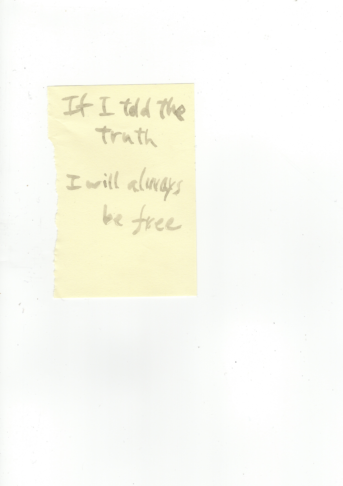
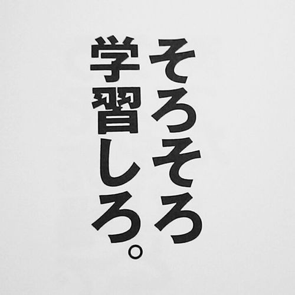

What Are Words: Learn Through Experience. Shape Your World.
Past is present: How Memories Become Meaning
Experiencing Words Physically: A Half-Cooked Response to Intro 2
The Unknowable, The Faith: Ambiguity in the Japanese Language
Ambiguity in Japanese Copywriting
Translating Ambiguity: How to Get Lost Twice in Translation
Hiroko Ichihara: In Between Copy and Conceptual Art
Conclusion: Maybe I didn't find the right words. Maybe that's alright.
Words of Dear Others

Introduction Version 1: The General
As I sit and strike the keyboard to place letters on my laptop screen, I am intently searching for the words that scoop and grasp my muddled thoughts — particles floating like space debris in the lawless universe of my mind — hoping to deliver them safely to whomever might be willing to receive them. Yet this attempt is always, at best, a sea of adversities. This is not due to a malfunction of the speech centre in my cerebrum or the emotional confusion that I had befriended alongside puberty; it is simply due to acceptance, if not resignation, of the undeniable fact that words can not do justice to the complexity of life that we carry around with us. Despite words being floating combinations of letters and sounds, vulnerable just like the concept of money, we hold an unshakable faith towards these human creations.
One day I will find the right words, and they will be simple.1
These are the exact words scribbled on to the corner of a page torn out from an old notebook, and clumsily pasted on to my bathroom door. It has been a habit acquired throughout the years, to jot down words that had caught my attention and stick them to any nearby surface. Initially, it was a ritual deriving from the fear and sorrow at how easily things could be forgotten or distorted in my mind as time passed. However recently, I had an epiphany: perhaps it was an act of self-guidance. A hopeful, continuous reminder to wonder until that day when I am wise enough to fully understand the meaning of those words, for the author but more so for me. Why in that moment did these exact words pop out of the pages and shout at my conscience? I wanted a reason then, and I still search for them now.
Words. The meat and potatoes of communication.
Not many people stop amidst a conversation to think: is the person sitting across from me, who is listening to the same exact collation of words as I, understanding them exactly the same way I do? Perhaps this is not an important process in order to have a smoothly carried conversation; and rightfully so, which I will later on explain why.
Communication. The human desire to share.
The term communication derives from the latin verb communicare which means ‘to share’. Sharing is an act of distribution, conciliation, elucidation, and compromise. Hence the terms ambiguity and communication seem to be standing on the opposite polar. Besides that, the term communication nowadays can be used in the tone of, if not as a complete synonym, to clarity. “Communicate” can be a one word demand towards somebody to make their stance articulate and clear. Therefore ambiguity of words, from the common notion of verbal and textual communication, may sound and seem like an oxymoron. As much as ambiguity and communication can be a parallel counterpart depending on the context, ambiguity will always be an inhabitant of any existing word.
What exactly is the power that words have that move people? How do we assign words with this power when they are merely combinations of letters? And why is it that such a powerful thing can also be described as “merely a combination of letters” and used in the most careless of ways?
1. Kerouac, J. (2001). The Dharma Bums. London: Penguin Books
Introduction Version 2: The personal
I was always fascinated with ambiguity. The grey area. The intangible. The complexity. Where ends don’t meet. The unexplainable. Humanity never seemed black or white but a spectrum of grey. That was what attracted me more than pure facts as we had come to know it.This became a constant source of guilt for me, especially since moving to the Western society as an adult and studying the arts where individual statement seemed so important. I thought this mentality derived from laziness or lack of concern; that I wasn’t determined enough to frame it black or white, or confident enough to structure a fixed opinion about something that no matter who poked me from whatever angle I can dodge every single one and prove I was a thorough thinker. It was unsatisfying to think I was shrugging my passive shoulder saying “Well, we all experience life differently, and we just need to deal with it” because there seemed to me is a force in this society that encourages us to declare what is true for ourselves, in black or white. However, the recent months I have come to the idea that perhaps there is some kind of truth in this ambiguity that we can’t access just by will power and that this “some kind of truth” must be the reason of my fascination.
So here I am, trying to grapple the impossible, within the restriction of merely 7000 words.
The most thinkable starting point for me in this search was language and words, my other constant obstacle and reminder of a void in communication. Ludwig Wittgenstein called language a labyrinth of paths, that “you approach from one side and you know your way about; you approach the same place from another side and you no longer know your way about.2”
2. Wittgenstein, L., Hacker, P. and Schulte, J. (2010). Philosophical Investigations. New York, NY: John Wiley & Sons.
3. Greene, D., Ross, L. and House, P. (1976). The False Consensus Effect: An Egocentric Bias in Social Perception and Attribution Processes. Stanford University.
4. Iep.utm.edu. (n.d.). Theory of Mind | Internet Encyclopedia of Philosophy. [online] Available at: http://www.iep.utm.edu/theomind/ [Accessed 14 Dec. 2017].
5. Check reference image.
6. Okrent, A. (2013). Is It Possible To Think Without Language?. [online] Mentalfloss.com. Available at: http://mentalfloss.com/article/50684/it-possible-think-without-language [Accessed 2 Dec. 2017].
7.Sapir, E. (1921). Language: An Introduction to the Study of Speech. New York: Harcourt, Brace.
8. Kohama, I. (2007). なぜ言葉は通じないのか (Why Words Don't Communicate). Tokyo: PHP研究所.
9. Stang, Nicholas F., "Kant's Transcendental Idealism", The Stanford Encyclopedia of Philosophy (Spring 2016 Edition), Edward N. Zalta (ed.), URL = https://plato.stanford.edu/archives/spr2016/entries/kant-transcendental-idealism/.
10. Words are but symbols for the relations of things to one another and to us; nowhere do they touch upon absolute truth.... Through words and concepts we shall never reach beyond the wall off relations, to some sort of fabulous primal ground of things. Nietzsche, F. and Cowan, M. (2012). Philosophy in the Tragic Age of the Greeks. Washington DC: Regnery Publishing.
What are words: Learn through experience. Shape your world.
Let’s look briefly at what words are, how they come to life and become part of our world.
Why do we think that when we communicate in words, others understand them the same way that we do? A simple answer could be that we have dictionaries to fall back on, giving us definitions and etymology, and the thesaurus to reassure us that our thoughts are expressible in innumerable ways and will eventually land on the right one. In social psychology, the false consensus effect3 can also be referred to. It is, simply put, how we tend to project our way of thinking onto other people, assuming other people think the same way as we do. We have developed our Theory of Mind4, a cognitive behavior to ascribe mental states to other people, and yet we still can not escape this assumption. In many cases, this assumption can act as a lubricant in everyday social interactions, allowing an extent of smoothness and linearity in the conversation.
We are taught from a young age to read and write, spell out words we will probably never use, and receive brownie points for knowing the longest word in the dictionary. Our obsession with words and seeing it as “one index of intelligence” might also be a source of our craving. To be the living proof of this, I have kept track of all the words I’ve searched during this writing process; either from reading or with the intention of using correctly5. The more words you know the better. But why? Language gives us “symbols we can use to fix ideas, reflect on them and hold them up for observation.6” It allows for a level of abstract reasoning we wouldn’t have otherwise. That means that the more words we have, we could potentially have a wider range of thought and ways to put them out to our external environment.
The way in which words are “authorless”, are similar to how nature concerns no ownership, yet dissimilar in the sense that nature is not human creation. It is similar to how culture is an organic and long-term crowd-sourced result of human activity, yet dissimilar in the sense that cultures are usually exclusive to the contributors and followers labelling themselves as part of the group (also contributors). As linguist Edward Sapir put it, “Language is the most massive and inclusive art we know, a mountainous and anonymous work of unconscious generations.7”
Words, like no other creation, is accessible, used and shared by people without any ownership (unless trademarked, ridiculously enough).
Itsuo Kohama, Japanese critic, writer and philosopher mentions in his book なぜ言葉は通じないのか (Why Words Don’t Communicate)8 , one of the seven characteristics of words as its inclination to create an illusion of something abstract as a real, comprehensible entity. An example of this tendency can be observed in Freud’s definition of id, ego and super-ego, which are interacting agents in the psychic apparatus. Not to mention these are theoretical constructs of our mental life, a space in which we can only access alone and never fully identify. They are a purely psychological concept that does not correspond to somatic structures of the brain such as neuroscience. Freud, keen and cautious, had emphasized the fact that they were nothing more than models, but his disciples and successors daringly utilized these words as if they were pre-existing entities, raising highly speculative debates. God, time, or particles are the same in the sense that once coined or verbalized, the presence of an entity that was once an abstract concept starts closing in, raising the inevitable debate of its credibility, existence, and the whats-its. Once something is, it is all but natural for humans to be curious of the whys-its, hows-its, wheres-its and take on deeply philosophical investigations. Even when abstract concepts such as time and space are being discussed as a priori condition, all terms coined around this discussion come from our surrounding environments and physical experiences. We have no other way to formulate abstract ideas and make them understandable or measurable. Kant, in Transcendental Idealism uses words such as external objects (bodies), inner sense (my thoughts), about self-consciousness and writes: “But since the expression outside us carries with it an unavoidable ambiguity, since it sometimes signifies something that, as a thing in itself [Ding an sich selbst], exists distinct from us and sometimes merely that belongs to outer appearance, then in order to escape uncertainty and use this concept in the latter significance—in which it is taken in the proper psychological question about the reality of our outer intuition—we will distinguish empirically external objects from those that might be called “external” in the transcendental sense, by directly calling them ‘things that are to be encountered in space’9”. So the notion of in/out (internal/external) in psychological terms, cannot be detached from connoting physical location, whether that be being outside a wall or inside our skin. Reflecting our physical experiences into the metaphysical discussions allow us to, exchange better, although perhaps never quite entirely. Trying to avoid discord or lamenting the words’ innate limitation in representing, Kohama writes and I insist, is not a productive way to live; exchanging abstract concepts and emotions are part of essential human activities, and allowing ourselves to openly verbalize these inner sense or abstract concepts in an existential context, is the only way in achieving a moment where we might “hit the nail on the head” and progress.
Words will fail us only if we treat them as content, complete communicators in itself. Intermediation will never seem fully functional, if we intend our minds to be understood by others rather than interpreted. We tend to understand that intuitively when it comes to images, music, or any other artform, but words have less of that luxury. 10
Experiencing Words Physically: A Half-Cooked Response to Intro 2.
A writer creates his or her sentences on the page, but the minute they are released to the world, they belong to the readers. American writer Cheryl Strayed raises an example of this: how many readers tattooed on their bodies a sentence from her novel: “How wild it was to let it be.” The significance in this act, is that it represents how we can own beauty that other people have made, simply because it lives within us. “I know what that line means to me, I know what that line means in the context of the book…but that individual who had that tattooed, it’s not my story. It’s not so much about the intention but the meaning they took from it.13”
Giving into the authorlessness of words may be an essential process of successful writing, or in any kind of verbal and textual communication for that matter. Mattijs van de Port, an anthropologist who works primarily with footage, specifically essay films, states that when textual and audio-visual anthropologies come together under one roof, one may make up for what the other lacks. Van de Port “faced the incompleteness of any attempt to mediate the world” when looking at anthropology as a practice of mediation.14
Both stories of these two creators are similar in the sense that they have both surrendered to the authorless-ness of words, and the undeniable fact that the intention of the transmitter is never ensured to be fully comprehended by the recipient.
And yet I still could not agree with Van de Port’s argumentation that words cannot be trusted to give the same immediate and bodily experience images can offer. I cannot emphasise enough that Van de Port does not diminish what words can accomplish; instead he sought greatest power in the combination of both words and film in his practice. However when he states by “just watching them (footage), I can ‘take them in’ without having to submit to the restrictions that come with qualification, without bringing the judgement to them that each and every word implies,” I was not fully convinced. It seems illogical to discuss taking in (receiving) and implication of the words (intention), when the receiving will be done second-handedly in anycase. Point being, both footage and words are intermediation, and the receiver will ultimately have their own judgements towards whatever mediation takes place. Perhaps the level of interpreting done by the author through production differs; however this still was not enough to convince me that the receiver will have a better understanding with less interpretation done throughout the process of making. He refers to David Morgan:‘unlike the word, which has no necessary relation to its referent, the photograph possesses its referent within itself. It bears an ontological relation to its referent.’15 Furthermore, referring to Vivian Sobchak and her analyses on the moment when films become translated into bodily responses; “commingling of flesh and consciousness…so that meaning and where it is made does not have a discrete origin in either bodies or representation, but merges from both”16. I would disagree, that if we acquire meanings to words through experience, our vast collection of memories of first hand experiences are the referents to our vocabularies. And if so, aren’t the evocation caused by words also translatable into bodily responses?
Suddenly, despite the seemingly opposing treatment of words within our views, Van de Port’s as a setback as mediation and mine as its mediatory qualities being the empowerment, something clicked. “The activation of the sensorium to respond,” as Van de Port describes a function of moving images, started to seem like the explanation to my habit of taking notes and pasting them to the wall, or underlining words that somehow grabs my attention in that moment in time. I did not recognise this as a bodily experience before. It does not touch me on the surface of my skin, or create a reflex in my muscles. However, ultimately it is a bodily reaction to something I could’ve either ignored or overlooked. I feel hooked, by a force making me read the same lines over and over again, mouthing them to imprint them stronger to my mind. In extreme cases, I even feel a chill down my spine, hair rise on the back of my neck. The words resonate with what was within me, pulling it out of my sub-conscience into somewhere closer to the surface of my body. Words trigger the imagination, which produces an endless stream of mental images.17 A sentence written by somebody else allowed me to own the beauty of it regardless of his or her intention, by triggering mental images and memories. Sometimes it doesn’t even occur as images but more intuitive and abstract, like recognising an old friend who resembles nothing of what you remember but you just know.
Philosopher Peter Carruthers has argued that there is a type of inner, explicitly linguistic thinking that allows us to bring our own thoughts into conscious awareness.18 The most powerful examples are when witnessing people caught broadside by a wave of emotion; witnessing them make a point and then for the words to ignite a feeling in their heart that catches them unprepared. Like a Gieger counter for issues that deeply matter, when they allow the words to come out, the emotion comes pouring in. The power of words, for now at least, might be its capacity to inhabit what exceeds what we know to be true in our conscious minds, but laying somewhere deeper, waiting to be discussed. And in my case this experience with words is so transcendent that it urges me to preserve that moment I was caught broadside. By writing it down and pasting it to the wall may not entirely encapsulate what had come over me; but it is an attempt and my way of worship.
13. YouTube. (n.d.). The Tim Ferriss Show LIVE with Cheryl Strayed — SXSW 2017. [online] Available at: https://www.youtube.com/watch?v=RmG5rCLTr8E&t=4289s [Accessed 4 Oct. 2017].
14. van de Port, M. (n.d.). In Love with my Footage: notes on the psychodynamics of mediation. *This text is currently under review with Review of Visual Anthropology (2017).
15. Morgan, D. (1998). Visual Piety: A History and Theory of Popular Religious Images. University of California Press.
16. Sobchack, V. (2004). Carnal Thoughts: Embodiment and Moving Image Culture. University of California Press.
17. Iser, Wolfgang. (1972) "The Reading Process: A Phenomenological Approach." New Literary History 3, no. 2 : 279-99. doi:10.2307/468316.
18. Carruthers, P. (2017). The Illusion of Conscious Thought. Journal of Consciousness Studies, 24(No. 9–10)
The Unknowable, The Faith: Ambiguity in the Japanese Language
Finally it has become unavoidable to talk about Japan: my homeland (not birth country), my mother-tongue (although I prefer to mix with English), my haven (only when I am away and longing for it), and my cultural spine.
The Japanese communication culture inherits ambiguity. It breathes, constantly and unconsciously like our bodies, the notion that one sentence or even a letter can contain the world but the world does not convey one message. Grey areas, or perhaps even blank spaces, are the truth.
This notion of grey truth stood out to me most in the way belief or faith is treated in Japanese language and other cultures. For example in Japan, blood type analysis and horoscopes are topics treated in mainstream media such as morning news and magazines. There are many best-selling books published about them. I had not known until a few days ago that blood types in English are called “Japanese Blood Type Theory of Personality”, specifically associated to Japanese culture. “But they don’t actually believe it’s true right?” are the most common responses here in Europe, brows raised with astonishment, as if to say “How can people be naive enough to categorise the whole population into 4 or 12 groups without any data of proof?” I understand this response. Yet I allow myself to sometimes sit in my room and indulge in my Virgo horoscope book to find comfort in the words that seem to resemble my personality. It doesn’t matter if it’s true, because it isn’t. It is not about doubtless belief like in science or monotheism, but a moment of allowing faith respond to the words on the page as it wishes.
Faith in the English vocabulary might have strong religious connotation, but in Japan people do not necessarily have the same association. The majority of Japanese people consider themselves “non-religious.” This is different from atheist, as seen from the fact that many of them do not strongly deny religions or Shinto and Buddhist deities, rely on the deities when they are in trouble, and respect religious ideas, such as ‘curses’ and ‘bad karma’. The reckoning of considering themselves non-religious was born through comparison towards Monotheism and Soshoshukyo (religion proposed by a person or a group), such as Christianity and Islam19. Surveys usually ask about religious belief (宗教心 shuukyou shin: having a religious mind), but that can be interpreted by ordinary people as asking if they have faith in a ‘specific religious organization’, which in most cases, the answer would be no. Philosopher Daisetsu Suzuki argued that religion (Buddhism, Shinto, and folk religion with the impact of Confucius) was so infused into Japanese culture that just by being born Japanese and taking part in the rituals and observances, you become part of the ‘religion’20.
So the word faith in the Japanese context is rather complex; the vector is not focused on one Divine, or placed in scriptures and customs, but rather intertwined in daily rituals, happenstance, spirits, objects, utterance, religion, nature, beauty, impermanence, tragedy, time, meaningfulness, vicissitudes and everything in between. It is not discrete from them and their lives, but a part of the whole. It is in fact undetachable hence unidentifiable; it is.
In the palm-sized Japanese Virgo horoscope book21 I curl up with some nights, the last few pages end on the following note: “Some people tell me, ‘I don’t really believe in horoscopes.’ This is truthful in 2 ways.” The author, Yukari Ishii explains that the first truth is that there are no “scientific” proof despite many attempts in the past, and while reason and logic being the force which restricts our recklessness or idleness, there is no good reason in believing something that is not proven right. The other truth about this common remark is that without this sort of disbelief, horoscope or fortune-telling will lose its power. The world we construct can be separated into 3 different categories: The Known, The Unknown, and The Unknowable. Scientific thoughts recognise only the first 2 worlds, but somehow, all along, our souls have left space for the third world to exist. As we carry on with our everyday lives dismissing The Unknowable as “unreasonable”, we occasionally revisit this world by attending theaters or festivals. This book is part of the third world too, as words we revisit now and then, not fully trustingly yet secretly leaving ourselves some space to believe it could perhaps be true.
In terms of devotion towards ambiguous expression, Haiku and Waka are the crystallizations. They are traditional forms of poetry since as early as the 8th century, based on the notion of 流転 / 無常( Ruten / Mujo) meaning something in the likes of impermanence, vicissitudes, flux, per pass, and transience. もののあはれ(Mononoaware) is another fundamental theme in this form of art, literally translated to “the pathos of things”, which indicates a sensitivity to ephemera and gentle sadness towards the inevitable passing of things. Haiku and Waka are profound examples of word art created with space for emotional evocation in mind, in its techniques and even rulesets. Not allowed to exceed 17 characters (broken into lines of 5, 7, 5 characters) for Haiku and 31 for Waka (5, 7, 5, 7, 7), skilled poets are capable of choosing a word conveying multiple meanings and combining them to expand the possible evocations a word can hold in a normal context. Such strict restrictions led to the exploration and expansion of space, in meaning and interpretation.
You have to learn not to understand everything. - Camille Henrot 21
Perhaps this goes for not only the receiver but also the sender.
19. Ama, T. (1996). 日本人はなぜ無宗教なのか (Why Japanese People are Not Religious). Tokyo: Chikuma Shobo.
20. Suzuki, D. (1940). 禅と日本文化 (Zen and Japanese Culture). Iwanami Shoten.
21. Ishii, Y. (2010). 乙女座 (Virgo). WAVE出版.
22.Vimeo. (n.d.). Camille Henrot, Film Spatial, 2007. [online] Available at: https://vimeo.com/85848879 [Accessed 23 Dec. 2017].
23. Sasagawa, K. (2015). 「恋は奇跡。愛は意思。」コピーライター尾形真理子さんに聞く、言葉のつくりかた. [online] HuffPost Japan. Available at: http://www.huffingtonpost.jp/2015/05/12/ogata-mariko-copywriter1_n_7262576.html [Accessed 17 Dec. 2017].
25. Ohwaki, J. (2012). 広告のキャッチフレーズ 110年間の変遷 : その時代の世相との連動からみて (The Change of Advertising's Catchphrase during the Past 110 Years : from A Viewpoint of Connection with Social Conditions). 流通研究 : 愛知学院大学流通科学研究所所報 : the journal of the Research Institute of Marketing and Distribution, 18, pp.p.101-119.
Ambiguity in Japanese Copywriting
Alongside rituals and arts, copywriting in Japan is an unnoted way of exemplifying the surrender to mediation and space, with perhaps less magical or poetic wonder but similar prose. Although commercialism is considered the grave of creativity by many artists, copywriting in Japan seems to hold a peculiar place in the industry. Copies, compared to poetry or word art, are meant to deliver to the audience a clear-cut view or feel of what it is promoting, what the product does or provide. The goal for a copy is to attract customers and boost sales in this highly competitive free market, so naturally, there needs to be intrigue, impact, and some sort of clear explanation of how the product is distinctive so it can be pulled out of the flood of products. Or at least that was what I thought studying English copies in stations or on billboards. However after analysing award-winning copies in Japan from the past 5 years, I came to realise that the most effective are discreet about what they are promoting, yet evocative of a very specific scene or containing a personal experience we tend not to share. The connection-making of the product, the advertisement and the message is left to the audience, which involves the process of recognising the story in their own lives. If there is no resonance, then the copy will not work. But this act of selecting through resonating creates more significance, and allows the words to hold a place in the receiver. The copywriters surrender to and embrace the fact that the words will not directly motivate people to do things, but rather the significance is in the act of the receiver taking what resonates with the life that they create with words. Surrendering to the ambiguity of words as a mediation does not necessarily mean to favour double meanings (Mariko Ogata calls this a weak copy23) or to create irresponsible messages that do not capture the essence of the product. The copy is a failure if it is confusing until it leaves the audience puzzled. To surrender means to, in the words of copywriter Reiko Kojima “write a copy that aims to reach that one person”24. Against the initial idea to promote and reach the widest audience possible, an effective copy is written to reach one personal space. It is less about the product but about stories of an anonymous someone. The rest is done by the force of nature, and this is the copies’ surrender to words.
That however, was not always the way copies were understood. Here is a rough overview of the shift in the copywriting culture in Japan.25
Adverts should project its superiority to its competitors. (The fundamental aim of ads)
↓
Advertising language can be egoistic (The exaggerative nature of ads)
↓
The targeted audience bears cautiousness or wariness
↓
The need for the agent to take the emotional guard down of targeted audience (Release from caution)
↓
The need for the agent to communicate from a similar position of the targeted audience (Emotional approach)
↓
Advertisements require to reflect the message to “the life of a modern ordinary individual” rather than towards a consumer
↓
Advertising language should contain narrative or story (The devise of advertising language)
↓
Propose a way of life (Proactivity)
↓
The targeted audience is moved or feels empathy, resonance etc. (The success of communication)
Let’s raise some examples. Mariko Ogata, award winning writer of copies for Lumine, a major fashion retailer and shopping complex, displays how the words on an advertising bill board can still effectively reach and resonate, leaving an impression on them whether or not they know what the advertisement is about; the brand is less prominent, with only a tiny logo in the bottom corner.
1. Koi (love, but more like a premature love, liking or crush) is a miracle, Ai (love) is will.
2. I guess I sort of suit this world.
3. Depending on words makes me a boring woman.
4. If you catch yourself thinking (about him) in the fitting room, it’s a real koi (crush).
None of these copies ever mention clothing, the brand’s main product. If I were to see only the words on a piece of paper, I would not even realize that it is an advertisement, but rather a poem or a cut out of a high school girls diary.
Following is an incredibly powerful copy for an exhibition of scary paintings called Fear in Paintings in Tokyo. The copy was imply one word: “Why”. In the way it is toned in Japanese, it suggests of having a “but” before it, like “But why”, as to question in desperation. It is a question with no answer or context, which creates a sort of abruptness and urgency. The way it is typographically placed in the edge in fine type also creates the sense of fragility and fear. Ultimately, combined with the image, the “why” can be read as a scream coming from the subject a moment before her execution, but it also resonates with the curiosity of the viewer and the rubbernecking towards something cruel and scary.
These are campaign posters for Seishun 18 Kippu (Sei “green” in the sense of “not yet fully ripe”, Shun “spring” with all its literal, figurative, and imaginative meanings. It means the time of youth, not yet of adult maturity. It can refer to “adolescence” or that time when we’re no longer children but can already feel and command some adult faculties, and connotes some bitter sweetness and energy. Kippu means tickets.) which were long distance student discount tickets for Japan Railways. Again, they do not mention trains, traveling, or youth, but resembles what we had once felt when we were young, curious about the big world, but not fully ready to let go of our childhood and our homes.
1. There must be someone out there who is like me.
2. A city beyond the tracks.
3. There comes a day when everything will be a rush.
4. Sleeping in felt like a loss.
The biggest challenge in translating copies was not the addition of subjects distracting the pure anonymity of the copy but rather letting go of the complexity of connotations that is learnt or acquired through time. Each word has a lived experience contained within their definitions. This becomes the intuition of a native speaker, which is difficult to translate into another language. In order to keep track of these connotations which I felt could not be translated fully into English, I chose the one word that appeared twice in English in my examples: “love.” In the original copies of Lumine, they were written as different words“Ai” and “koi.”
Translating Ambiguity: How to Get Lost Twice in Translation
Trying to unveil the power of words through writing about Japanese copies, was simultaneously a process of allowing the copies to lose its immediate power through translation. Knowing that the native intuition will not be accountable, meant a need of deeper analysis into my mother tongue in relation to English. This was when I noticed the reason why, as much as I was swooning over the brilliant insights of Wittgenstein’s theories, his commonly quoted “Whereof one cannot speak, thereof one must be silent”31 never truly shook me the way his other works did. I’ve attempted to understand numerous times, thinking better not to doubt the words of a genius, yet couldn’t manage to find a convincing explanation or analysis on these words (the simplicity and decisiveness of the phrase allows many interpretations). However, after spotting the sentences of Itsuo Kohama in previously mentioned なぜ言葉通じないのか(Why Words Don’t Communicate32), I found consolation to this stir. He daringly wrote: “Do not be misled by the achievements of the Western language philosophy.” And he did not mean this as provocation or rivalry, but an encouragement to trust our own culturally nurtured mode of perception. (However it was a relief to find out that Wittgenstein himself opted the above mentioned approach on words in his later works but I will not go into depth with that.) The core argument of Kohama is that the fundamental religious pillar of Western philosophy being Judaism and Christianity, language philosophy also connotes the worship towards absolute truth. The logical space in which Wittgenstein talks about, exists within the notion that “the world consists of facts: facts cannot strictly speaking be defined, but we can explain what we mean by saying that facts are what make propositions true, or false.33”
In Tractatus Logico-Philosophicus, seen on right, Wittgenstein states clearly his view on the world, and this simplicity and boldness was exactly what wooed me at the start. However, Kohama points out that understanding this also requires agreement to the notion of In the beginning was the λόγος (Logos)... (John 1:1)34 (Logos often translated as Words in English but essentially the Divine), and the belief in a precondition and order of the world in which was decided for us by The Absolute God. As mentioned before, Japanese culture historically does not share this belief. So now, compared to a language (English) which considers words as logos and always requires a subject in its grammatical structures, Japanese heavily relies on verbs, adjectives, and adverbs on expressing inner senses and images, non-requiring of a fixed agent. In translating copies, this difference became an obstacle, since in most Japanese copies the subjects such as "I" or "you" were absent and the moment it was translated into English, the power of anonymity vanished. The roles became more specified, and created a layer of division in between the sender and the receiver. The relevance of this point Kohama makes on the grammatical difference in English and Japanese, is that “despite the difference in language culminated by culture, in any case ‘when words don’t communicate’, the solution to this problem is never reorganizing the logos, but to observe the sharing of emotion (inner sense).35
To trust my instinctive puzzlement towards the words of such high intellect and source of insight throughout my research, effectively offered another insight into how culture fundamentally effects not only the words we speak but our approach towards communication itself. This was not a revelation to an intellectual level; I had repeatedly read the forewords by Stuart Chase in Whorf’s Language, Thought and Realities: “Whorf, as I read him, makes two cardinal hypotheses: First, that the structures of thinking are independent on language. Second, that the structure of the language one habitually uses influences the manner in which one understands his environment. The picture of the universe shifts from tongue to tongue.36” However it was a revelation at an emotional and sensitive level. Feeling lost in translation is a familiar feeling to many, yet for me trying to translate the affect and stir caused by words in another language was a double estrangement in translation.
31. Wittgenstein, L. and Russell, B. (2010). Tractatus Logico-Philosophicus. [ebook] p.10. Available at: http://www.gutenberg.org/files/5740/5740-pdf.pdf?session_id=a04c1147118e98242ea234f6b15dba1224bf1e1d [Accessed 24 Nov. 2017].
32. See Ref. 8.
33. See Ref. 30
34. The Holy Bible. (2000). New York: American Bible Society. Verse from Gospel of John.
36. Whorf, B., Carroll, J., Levinson, S. and Lee, P. (2012). Language, Thought, and Reality: Selected Writings of Benjamin Lee Whorf. 2nd ed. MIT Press.
I have asked some contributors to write down some thoughts.....

Hiroko Ichihara: In Between Copy and Conceptual Art
Hiroko Ichihara stands in the middle ground of fine arts and commercial, her work being a hybrid between conceptual art and copy writing. Upon researching her work, I came across writings emphasising the fact that she is not a copywriter. This is true, in the general sense that she is not writing these words in order to sell a product or promote a specific idea. However, the significance of her work (alongside the fact that people mistake her work as copy in the first place) in the context of this text is that she shines light upon these two separate forms of word art, one as fine art and the other as commercial strategy, and makes us wonder if in fact there is a difference in affect on the audience when taken out of its original context. If the intention ultimately does not dictate the effect, then perhaps the only difference is that copies attempt to provide an option, where conceptual art attempts to raise questions.
In Ichihara’s case the simplicity of the form, which is always black bold type on white background27 without any images, logos, or additional information is the only aspect which distinguishes itself from a copy. The intention of the words is unclear, since they can be interpreted with a number of storylines same as that of the people on this earth. Copy in commercial settings probably never was created with the same goal. However it proved to be highly effective.2829
On one hand it is poetry, and on the other hand it is copy. Perhaps the same can be said for the current trend in Japanese copywriting.
The development in Japanese copywriting has come to the point where the audience is left to interpret the words in their own narrative, essentially their life. The work of the writer is to think of a simple, catchy, poetic, sometimes poignant, and many cases comprehensive sentence that could resonate with one person in the crowd. If 100 audiences were asked the meaning of the copy in relation to the promoted product and themselves, there would likely be 100 different answers or stories told. Those are the kinds of copies that have been remembered by people in the recent years. Successful copywriters handle words with the awareness that the information about the product should not be stuffed into all audiences’ mouths, because they all have ever-developing taste buds. Copies are created with spaces in between the words for the reader to settle in with resonance or recollection.
27. There have been a few merchandise with white type on black background.
28. 第55回 宣伝会議賞. (n.d.). 第55回 宣伝会議賞｜歴代グランプリページ. [online] Available at: https://senden.co/history [Accessed 10 Dec. 2017]. Award winning copies of the past years.
Discussing words as agents of intermediation essentially seems to be talking about limitations. This isn’t a new thought but rather ancient. The myth of the Tower of Babel is a representation of a dream of a common language, which has lived on in humanity since we were first aware of the existence of languages other than just “ours”. If the Tower of Babel were to be internalized, it would in my case, probably look like a clumsy pile of paper with words highlighted and underlined, messy scribbles running across its surface. Learning new words or new ways of using known vocabulary gave me satisfaction in the way that it felt a little bit closer to filling the gap between my saying/showing distinction, as artist/researcher and author of Taxidermy for Language Animals Tine Melzer put it.11 As a child, probably much like any other child, I needed flashcards to prepare for vocabulary exams. This also meant that I would easily forget meanings of words once I transferred them from my flashcards to my memory and finally on to the exam paper. The words that had slipped out of my memory had no specific significance or resonance at that point in my life. To give this mildly sad childhood episode some scientific flair, our declarative memories (“knowing what” or consciously recallable memories) are stocked in our brains as either episodic memories or semantic memories. The former is the memory of autobiographical events (times, places, associated emotions and other contextual knowledge), where individuals tend to see themselves as actors in these events, and the emotional charge and the entire context surrounding an event is usually part of the memory. The latter is a more structured record of facts, meanings, concepts and knowledge about the external world that we have acquired. Semantic memories may once have had a personal context, but now stand alone as simple knowledge, much of it being abstract and relational and is associated with the meaning of verbal symbols. Although declarative memories are subdivided into semantic/ episodic memory, semantic memory is generally derived from the episodic memory, in that we learn new facts or concepts from our experiences, and the episodic memory is considered to support and underpin semantic memory. Gradual transition from episodic to semantic memory takes place, in which episodic memory reduces its sensitivity and association to particular events, so that the information can be generalized as semantic memory12. This means that learning the meaning of the word “hot” came from physically experiencing heat or witnessing that of others, and although these words became generalised information for our brains to be able to process information faster, words we know now as simply verbal symbols were once episodes, experiences, and emotions in our autobiography.
Definitions of words were once living memories instead of static bare data.
11. Melzer, T. (2016). Taxidermy For Language-Animals. Zürich: Rollo Press.
12. Mastin, L. (2010). Episodic & Semantic Memory. [online] The Human Memory. Available at: http://www.human-memory.net/types_episodic.html [Accessed 6 Dec. 2017].
37. Shire, W. (2014). Teaching My Mother How to Give Birth. Lightning Source Inc.
38. To borrow words from Liz Kotz in her book Words to Be Looked At, “By their nature, words are both here - concretely and physically present on the page, or in the moment of utterance - and yet also elsewhere - referring to, evoking, or metaphorically conjuring up sets of ideas, objects, or experiences that are somewhere else.”
Conclusion: Maybe I didn't find the right words. Maybe that's right.
In the attempt to tackle the void in communication, it led me to discover the mystical power of words and the natural human desire to comprehend the unfathomable, despite the initial plan of collecting as much academic research in linguistics possible or scientific facts in neuroscience to backup the “whys” of this void, as if I knew were a definable phenomena. Gathering academic theory didn’t come too close to backing up the moments it happened; the sensation I get from words was as powerful as that provoked by images, scent, or sound. Words were sensual, and it was as if the process of reading and writing was the proof in the pudding. When the words were in the “right” context for me in that moment, it started to breath significant meaning, knowing it deserved to be noted or rewritten, and this is how this text took its form as well. (How do these sentences make sense in relation to one another, to what did this resonate with in me, and finally how could it manifest itself outside the context of myself ?) No new discovery, moreover a solution, will be written here, I thought skeptically before; all have had been visited and covered by the predecessors I am seeking insight from.
However this process of reading and writing about inner places that have never been visited by anybody besides ourselves, and how words of others can access that place beyond our consciousness and control, prompted a poem by Warsan Shire. 37
At the end of the day, it isn’t where I came from.
Maybe home is somewhere I’m going and never have been before.
It wholly defies the general definition of home being a significant and physical place that we originate from (past) or currently inhabit (present); precisely by doing so captures the emotion of “once” and “yet to be” simultaneously, and raises the sense of carrying oneself in the space between. The home unknown, seems as a metaphor of our inner senses inaccessible by will, which just like other sensual memories, words have the power to touch, refer, and evoke.
Like this, words come alive in the context, just like the complexity our lives inherit. The past is, intrinsically the present and future, just like past joy strengthens us or pain causes trauma and dictate who we are today.38 A metaphor, as it seems, of our lives are words. We exist in a context of the relations that define who we are and become, and the definition shifting from one meaning to another in every step we take.
As an afterthought, what triggered this almost radical and defensive favoritism towards words may have to do with the context I am placed in now: a world flooded with imagery online and off, software generated out-of-this-world experiences, visual information dictating so much of communication and attention paid in our modern life. My attempt even seemed naive given our appreciation of non-verbal interactions and communications. Especially as a graphic design student in an European art academy, I was constantly being fed colors and pixels and motion pictures and Photoshop effects. As much as I am enchanted by the sensation pixels and inks offer, I felt as if words were plunging into the opposite direction of abuse: they are not offered the same luxurious space of interpretation. People would write things and throw them into the whirlpool of anonymous audiences (which in itself is not a misdeed at all; rather it is courageous since it is an act of voluntary vulnerability to cast yourself into the spotlight of critics). However, the problem surfaces when the sender and the responder so commonly play the games of “who is misleading in the words they used” or “who left the words out”, falling into a loophole of nit-picking over details, demonstrating our notion of treating words as if they are fixed, concrete, universal signs that can never be negotiated over. “LMGGTFY (let me google that for you)” they would sarcastically say, and quote a definition that our modern day all-knowing god has to offer. Mariko Ogata, Japanese copy writer, on creating a magazine called “Color of Me. 水色の自己主張(Self-assertion in the color of pale blue)” explains that the current ways of assertion is prone to be refute. Yet we have witnessed cases, by small and large, personal and public, of driving forces so powerful and gracious with its expression being so soft and supple.
Did we lose, or have to begin with, the sense that words we use to assert don’t have to be bold and loud, but could have a force like water quietly streaming and carving into stones?